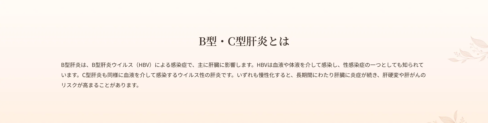
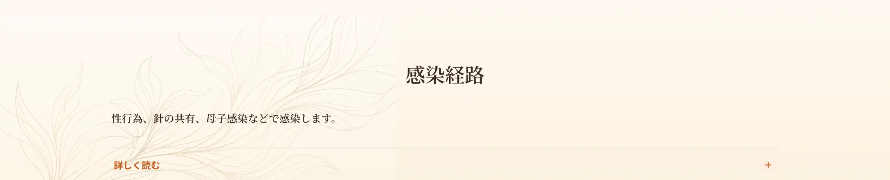
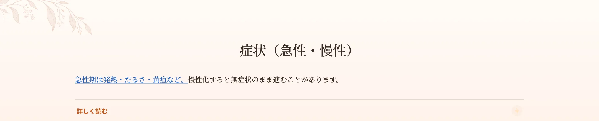
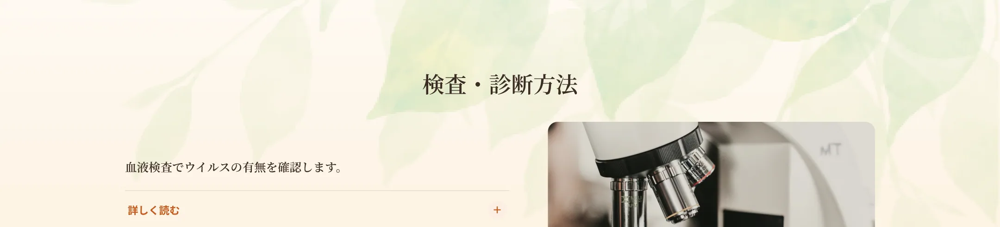
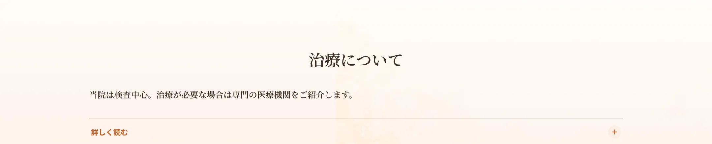
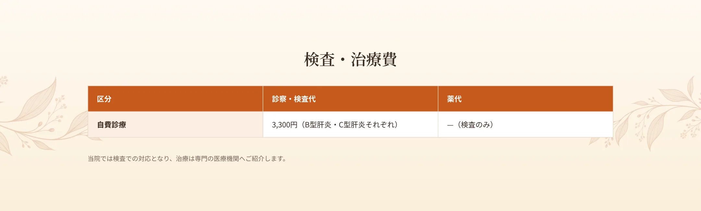
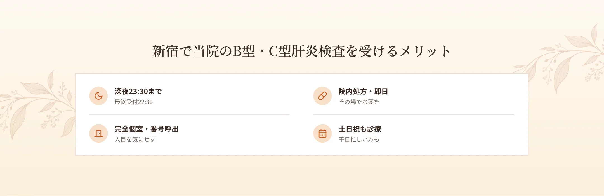

新宿駅から徒歩6分、エイチクリニック新宿では、B型・C型肝炎の検査を行っています。肝炎ウイルスは血液や体液を介して感染し、性感染症の一つとしても知られています。自覚症状がないまま進行することもあるため、心当たりのある方は検査で確認することが大切です。当院は匿名・完全個室・呼び出し番号制で、深夜23時30分まで・土日祝も受診可能です。


性行為（膣性交・肛門性交・口腔性交）による体液の接触、汚染された針の共有、医療器具の使い回し、出産時の母子感染などが主な感染経路です。

急性B型肝炎では、潜伏期間を経て、発熱・倦怠感・食欲不振・嘔吐・黄疸（皮膚や白目が黄色くなる）などが現れることがあります。多くは自然に治りますが、重症化することもあります。慢性化すると無症状のことが多いものの、長期的に肝臓に炎症が続き、肝硬変や肝がんのリスクが高まります。

血液検査でウイルスの有無を確認します。B型肝炎ではHBs抗原などを調べます。心当たりのある方や、これまで検査を受けたことがない方は、一度確認しておくと安心です。

急性の場合は自然に治ることが多いものの、慢性化した場合は抗ウイルス薬による治療が必要になることがあり、長期にわたることが多いです。治療が必要な場合は、当院から専門の医療機関をご紹介します。当院は主に検査での対応となります。



A.無症状で進行することがあるため、心当たりがあれば確認をおすすめします。
A.B型肝炎を含むセット検査もあります。
A.専門の医療機関をご紹介します。
A.当院では自費診療での対応です。
A.深夜23:30まで（最終受付22:30）対応しています。